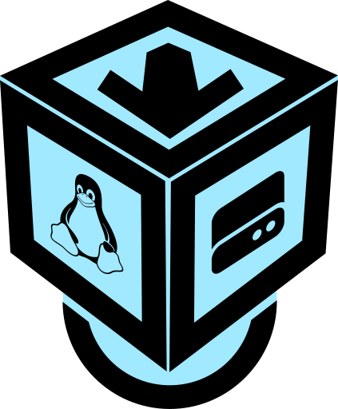

{kind=link}
We believe security software like Kicksecure needs to remain Open Source and independent. Would you help sustain and grow the project? Learn more about our 14 year success story and maybe DONATE!
Wiki EnhancementsDocumentationPackages for Debian HostsPrevious page: Wiki EnhancementsIndex page: DocumentationNext page: Packages for Debian HostsVirtualBox Installer for Linux
The VirtualBox Linux Installer is designed to simplify the installation of VirtualBox. Let's explore its features:

The VirtualBox Linux Installer offers a user-friendly method to install VirtualBox on Linux systems.
It supports Debian, Fedora, and their derivatives such as Ubuntu (starting from version: Ubuntu Jammy (22.04) (LTS)), Linux Mint, RedHat, and Kicksecure.
Designed by Kicksecure developers, not Oracle
(virtualbox.org).
 Choose Your Installation:
Choose Your Installation:
Opt for either A or B.
- A
VirtualBox Only: The
virtualbox-installer-clion this page installs only VirtualBox. It does not include the installation of Kicksecure. - B VirtualBox with Kicksecure: To install both VirtualBox and the Kicksecure VMs, visit the Kicksecure Linux Installer wiki page.
TLS
1 Download.
curl --tlsv1.3 --output virtualbox-installer-cli --url https://www.kicksecure.com/dist-installer-cli
Optional: Digital signature verification.
- Digital signatures are a tool enhancing download security. They are commonly used across the internet and nothing special to worry about.
- Optional, not required: Digital signatures are optional and not mandatory for using Kicksecure, but an extra security measure for advanced users. If you've never used them before, it might be overwhelming to look into them at this stage. Just ignore them for now.
- Learn more: Curious? If you are interested in becoming more familiar with advanced computer security concepts, you can learn more about digital signatures here: Verifying Software Signatures
Choose either Option A, Option B or Option C.
Option A) Install the installer from the Kicksecure APT repository
By installing from the Kicksecure APT repository, no additional verification of the installer is required because APT automatically does that.
1 Add the Kicksecure APT repository.
See Kicksecure Packages for Debian Hosts.
2
Install package usability-misc.
Because it contains the Kicksecure Linux Installer.
Install package(s) usability-misc following these
instructions:
1 Platform specific notice.
- Kicksecure: No special notice.
- Kicksecure-Qubes: In Template.
2 Update the package lists and upgrade the system.
sudo apt update && sudo apt full-upgrade
3
Install the usability-misc package(s).
Using apt command line --no-install-recommends option is in
most cases optional.
sudo apt install --no-install-recommends usability-misc
4 Platform specific notice.
- Kicksecure: No special notice.
- Kicksecure-Qubes: Shut down Template and restart App Qubes based on it as per Qubes Template Modification.
5 Done.
The procedure of installing package(s) usability-misc is
complete.
3 Run the Kicksecure Linux Installer.
virtualbox-installer-cli
4 Done.
Option B) Verify the Installer
The Linux Installer is signed by Kicksecure developer Patrick Schleizer using OpenPGP and signify.
Do you already know how to perform digital software verification using an OpenPGP and/or signify key?
- Yes: Acquire the Signing Key and the signatures straight away and proceed.
- No: Consider the following instructions: Undocumented. Unspecific to Kicksecure.
- Installer
- OpenPGP signature
- Signify signature
signify:
signify-openbsd -Vp keyname.pub -m dist-installer-cli
Option C) Manual Installation without the Installer
1 There is no need to use the Kicksecure Linux Installer.
The user is not forced to use the Kicksecure Linux Installer.
2 Manually install Kicksecure for VirtualBox.
Use the manual Kicksecure for VirtualBox instructions instead of the Kicksecure Linux Installer.
3 Done.
2 Run the installer.
bash ./virtualbox-installer-cli

onion
1 System Tor setup.
Downloading via an onion service requires a functional system Tor. This aspect is not specific to Kicksecure and is undocumented.
2 Download.
torsocks curl --output virtualbox-installer-cli --url http://www.w5j6stm77zs6652pgsij4awcjeel3eco7kvipheu6mtr623eyyehj4yd.onion/dist-installer-cli
3 Run the installer.
bash ./virtualbox-installer-cli --onion
More About the VirtualBox Linux Installer:
- Script name verification: The installer checks for valid
script names, such as
dist-installer-cli,virtualbox-installer-cli,kicksecure-cli-installer-cli,kicksecure-lxqt-installer-cli. - Command-line parsing: The installer parses any command-line options provided.
- System requirements check: The installer assesses if the system meets prerequisites like adequate disk space, RAM, and virtualization support. Users are informed if any of these criteria are not met.
- Package installation: Necessary packages for the script's
operation, like
signify,curl,rsync, andvboxmanage(for VirtualBox users) are installed using the distribution's package manager (APT or DNF). - Repository settings: Repository selection and configuration
depends on platform and distribution release.
- Debian and derivatives: Repository logic depends on the
Debian release in use.
bookworm(oldstable): Enables the Debianbackportsandfasttrackrepositories.trixie(stable): Enables thevirtualbox.org(Oracle) repository.[1]sid(unstable): Installs from Debianunstablerepository.
- Ubuntu: Installs from the Ubuntu repository. [2]
- Fedora and derivatives: Enables the
virtualbox.org(Oracle) repository. - Updates: The preferred repository for VirtualBox installation
may vary in the future based on availability. Updated installers might
fetch VirtualBox from the Debian
fasttrackrepository,virtualbox.org(Oracle) repository, or the Kicksecure repository. Development discussion: VirtualBox Integration and Upgrades
- Debian and derivatives: Repository logic depends on the
Debian release in use.
- Version querying: If no version is specified via command
line, the Kicksecure version number is fetched using the API. (Only if installing Kicksecure.) (Not for
virtualbox-installer-cli. [3]) - VirtualBox configuration: System configuration is automatically added to prevent VirtualBox from conflicting with KVM, without breaking functionality for either VirtualBox or KVM.
- Virtual machine handling: VM-related steps depend on whether
VMs are already present and on installer mode.
- Previously imported VMs: Users are prompted to boot the
virtual system(s). (Not for
virtualbox-installer-cli. [3].) - Previously downloaded VM files: Authenticity and integrity
checks are run. (Not for
virtualbox-installer-cli. [3].) - First-time users: The installer downloads the required files,
conducts authenticity and integrity checks, imports the system(s), and
then attempts to start the Virtual Machine(s). (Not for
virtualbox-installer-cli. [3].)
- Previously imported VMs: Users are prompted to boot the
virtual system(s). (Not for
- Running VM detection: Inform user if VMs are already running
and abort installation. (Not for
virtualbox-installer-cli. [3].)
Additional Features:
- Download resumption: Utilizes
rsyncinternally to enable download resumption capabilities. - Oracle repository downloads: When using
--oracle-repocommand line option, downloads VirtualBox from Oracle repository. This is the default for Fedora-based distributions. It is optional for Debian-based ones (including Ubuntu) but may be set by developers in the future if the Debian repository discontinues the VirtualBox package. The Oracle repository might at times provide a newer VirtualBox version. - Digital signature verification: Uses APT (which verifies
digital software signatures). When using the
--oracle-repo, installs Oracle's repository and signing key. - Integrity checking: Offers a streamlined integrity
verification process, facilitated by
rsync. - Onion support: Allows for downloads from onion sources with
the
--onioncommand line option whenever possible. (For example, Oracle does not provide an onion repository.) - Default download directory: Files are saved in the
~/dist-installer-cli-downloadfolder. - Logging mechanics: For transparency, every command executed is logged in the download directory, accompanied by the specific script version used at the time.
- Transparent system modifications: The installer's operations are evident to the user. All persistent system alterations, especially those executed with administrative ("root") privileges, are prominently detailed in the installer's output.
- Documentation: Comprehensive details can be found in the
 Kicksecure/usability-misc.
Kicksecure/usability-misc. - Checks: Nested Virtualization, secure boot enabled check.
Developer Information:
- Source code:
Kicksecure/usability-misc,
Kicksecure/usability-misc
- Development wiki page: Dev/Linux Installer
- Development discussion: forums discussion
- Security: The
dist-installer-cliscript is not intended for curl bash piping. However, for a comprehensive discussion on security concerns related to this topic, see here.
Intended User Groups:
VirtualBox Installer for Linux only automates things which could, in principle, be done manually by the user. Advanced users will not see many advantages. If you are interested, please click "Learn More" on the right side.
If the user can manage to install VirtualBox according to the instructions of their operating system, following Oracle's instructions on virtualbox.org/wiki/Linux_Downloads, using prebuilt packages for their operating system, Oracle's virtualbox.org provided packages, or even compiling VirtualBox from source code, there is little additional benefit to using this installer. The main benefit of the installer is that it resolves many usability issues users might experience during the installation of VirtualBox.
- Skills gap: Following provided instructions requires skills
that many laymen users do not possess, such as:
- Finding instructions: Locating the installation instructions.
- Choosing downloads: Knowing what to download (whether to download prebuilt packages directly or add a package repository).
- Dependencies: Understanding the requirements for dependency installations, such as kernel headers (which have different names depending on the distribution).
- TLS prerequisites: Knowing about packages like
apt-transport-httpsandca-certificateswhen using Debian and TLS. - Undocumented dependencies: Installation of undocumented
dependencies:
- Udev: (
udev) - Fedora kernel headers:
kernel-devel(Fedora) - Fedora DKMS:
dkms(Fedora)
- Udev: (
- Root file edits: Editing files with root permissions, such as
/etc/apt/sources.list. - Distribution codename: Recognizing the codename of their
distribution and replacing with it. Example:
deb [arch=amd64 signed-by=/usr/share/keyrings/oracle-virtualbox-2016.gpg]https://download.virtualbox.org/virtualbox/debiancontrib - Avoiding outdated commands: Avoiding the simple copying and
pasting of outdated commands, like
sudo apt-get install virtualbox-6.1, and replacingvirtualbox-6.1withvirtualbox-7.1 - Repository awareness: Being aware of the existence of Debian backports or fasttrack.
- vboxusers group: Adding a Linux user account to the Linux
user group
vboxusers(otherwise, using USB devices from VirtualBox VMs will not work).
- VirtualBox packaging gaps: As of September 2023, when Debian
12 ("
bookworm") was released as Debian stable, virtualbox.org does not provide packages or instructions on how to install VirtualBox on Debian testing, Debian unstable ("sid"), or Linux Mint.- Debian unstable: Installing VirtualBox on Debian unstable is
relatively straightforward since VirtualBox is available in Debian
unstable. However, it is not in the
maincomponent but only in thecontribcomponent. - Debian testing: Installing VirtualBox on Debian testing is not as straightforward. However, it can be done using APT pinning to download only VirtualBox from Debian sid and not install any other packages from sid. Only relatively advanced users are typically aware of APT pinning. The author of this text could not even find third-party instructions on search engines on how to achieve this.
- Debian unstable: Installing VirtualBox on Debian unstable is
relatively straightforward since VirtualBox is available in Debian
unstable. However, it is not in the
- Unmet dependencies: Users often encounter numerous package
manager unmet dependency issues. For a demonstration, try the following
search engine query:
site:https://unix.stackexchange.com/virtualbox unmet dependencies - Debian 12 delay: After Debian 12 ("
bookworm") was released as Debian stable, VirtualBox was unavailable as prebuilt packages for approximately 6 months. (The ticket was created on Feb 27, 2023, and closed on Aug 16, 2023.)- Fasttrack gap: Simultaneously, Debian did not provide prebuilt packages for roughly 3 months. However, this installer managed to install VirtualBox during that period. This was achieved by Kicksecure maintainers downloading VirtualBox from Debian testing, uploading it to the Kicksecure (Debian-based) stable repository, and the installer then installed VirtualBox from the Kicksecure repository.
- Prebuilt package failures: Sometimes, prebuilt packages from
virtualbox.org fail to install. For reference, see this VirtualBox on Fedora bug
report which also affected
Debian.
- Installer mitigation: This installer did not face this issue since it prioritizes packages from the user's distribution (like Debian) over prebuilt packages from virtualbox.org.
- Guest additions compatibility: Using distribution packages
offers the added advantage of allowing users to install VirtualBox guest
additions from the same source. This ensures version compatibility and
increases the likelihood that features such as virtual screen size
adjustment and seamless VM copy/paste will function as expected.
- Guest additions packaging: VirtualBox Guest Additions Debian Packages are not available from the Oracle Repository. Oracle provides only an installer, not distribution packages.
- Future work: A VirtualBox guest additions installer is not yet provided by Kicksecure developers, but it might be in the future.
- Debian complexity: Installing VirtualBox on Debian is complex
because VirtualBox is unavailable from both the Debian stable
and backports (repository) and it is also unavailable from the Debian
main(component).- Foreign repositories: It is preferable to avoid adding foreign sources (extra package repositories) from third parties if possible. In the case of Debian and VirtualBox, this is achievable by using Debian's lesser-known fasttrack repository.
- Virtualization checks: The installer verifies if
virtualization support is present. If not, it warns the user and
displays a clear message, including a link to detailed documentation.
- (VT-x issues) This approach is more user-friendly than the cryptic error message displayed by VirtualBox.
- Upstream usability issues: While VirtualBox is nice, it has
some usability issues. The author of this wiki page wishes that there
was not a need for a VirtualBox installer and hopes these issues will be
addressed by Oracle.
- Debian integration: For instance, if Oracle addressed the compilation toolchain software freedom issue and provided stable security
support, then installing VirtualBox would be as simple as installing
any other software package from distribution repositories. This would
make distributions like Debian more inclined to host VirtualBox in their
stable repository (and
maincomponent instead ofcontrib).
- Debian integration: For instance, if Oracle addressed the compilation toolchain software freedom issue and provided stable security
support, then installing VirtualBox would be as simple as installing
any other software package from distribution repositories. This would
make distributions like Debian more inclined to host VirtualBox in their
stable repository (and
- Usability research: As a theoretic alternative would be for users to possess enhanced technical skills, negating the need for assistance. However, in practice, laymen users often struggle even with comparatively simpler tasks. Refer, for instance, to this usability research, "Eliminating Stop-Points in the Installation and Use of Anonymity Systems: a Usability Evaluation of the Tor Browser Bundle", or to this "small usability research compilation".
- Design rationale: For technical reasons why the installer was implemented the way it has been, see Dev/Linux_Installer, Design.
Related Tools:
vbox-guest-installer(A utility that enhances usability by facilitating the installation of VirtualBox guest additions from Debian's (packages.debian.org) packagevirtualbox-guest-additions-iso.)
Disclaimer:
The VirtualBox Installer for Linux is a product of the Kicksecure
developers. It is not associated with VirtualBox.org
or Oracle.
Footnotes:
- This is because Debian Trixie's
fasttrackrepository does not have VirtualBox yet, and Debian Sid's build of VirtualBox is not compatible with Trixie any longer. - Might sound complicated but it is actually quite simple in case of
Ubuntu. Install from the usual, "normal", official
packages.ubuntu.com. From the usualsuite. For example, if using suitejammy, it installs fromjammy. This is because Ubuntu is packaging VirtualBox for their usual stable suites. Debian does not. That is why Ubuntu does not require any special repository. (Debian requiredbackportsandfasttrackrepositories at time of writing.) - Because that is not required if only installing VirtualBox using
virtualbox-installer-cli.)
Categories: Documentation